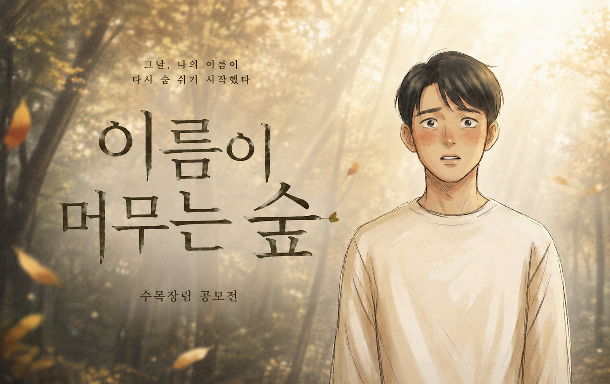
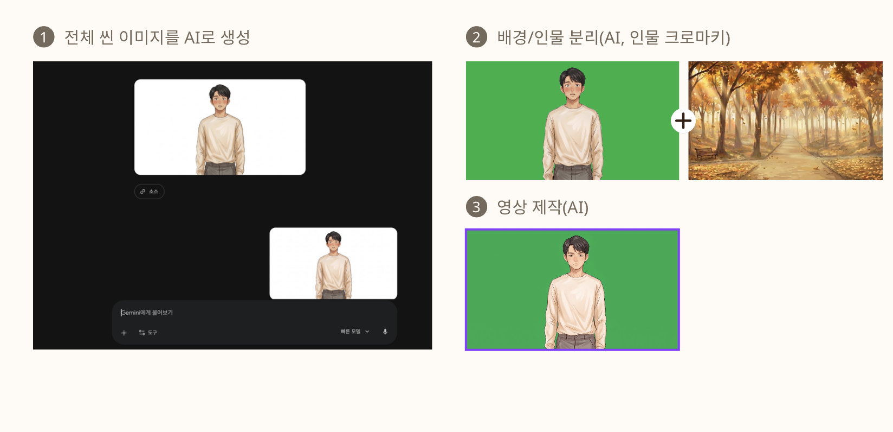
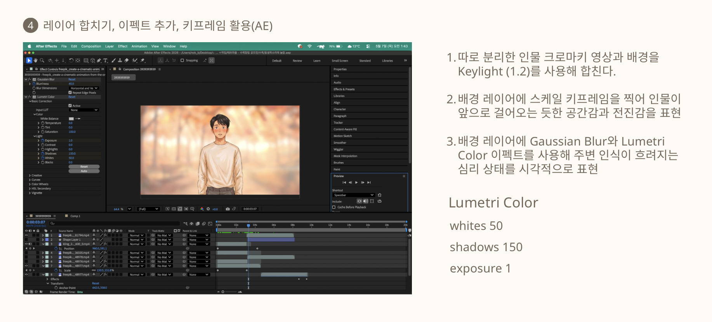
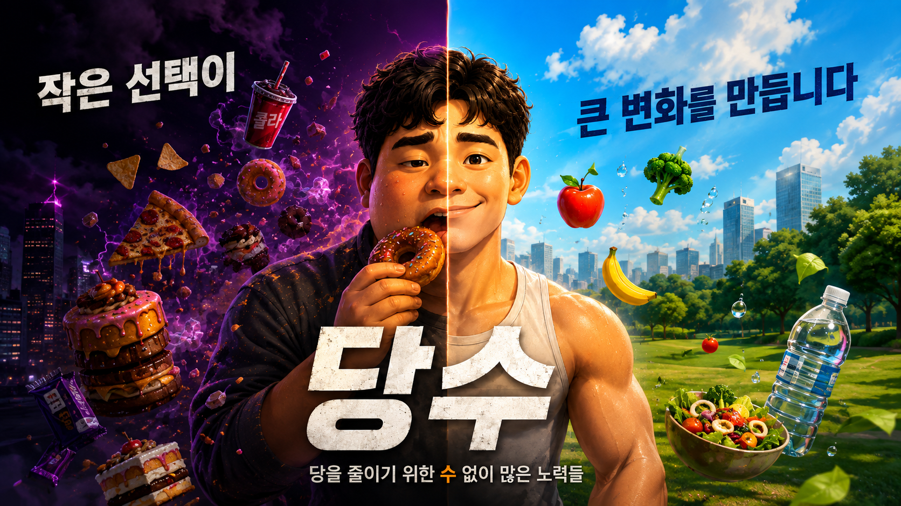
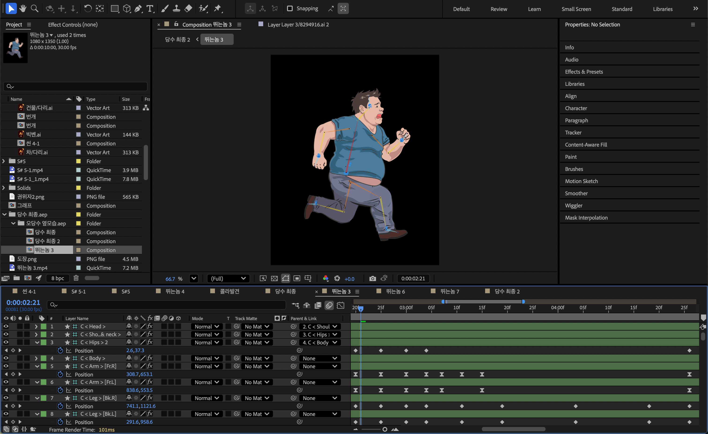
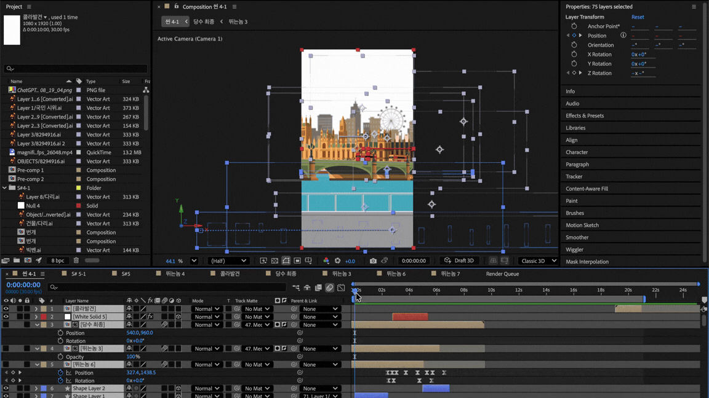
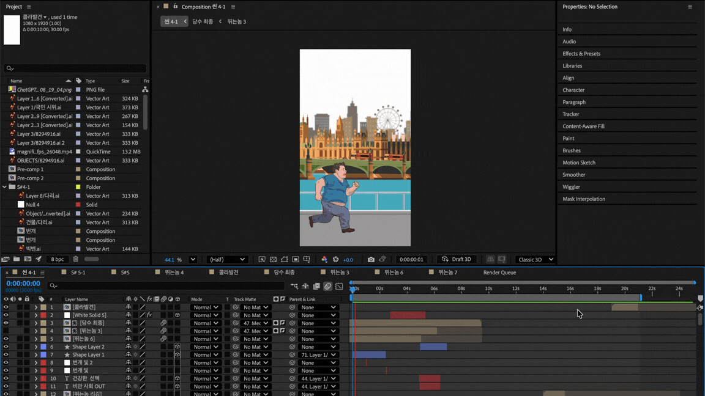

모든 움직임에는
이유가 있어야 합니다.
컷과 리듬을 통해 이야기를 완성하고
메시지가 기억에 남는 순간을 만듭니다.
서랍 속 작업물

이름이 머무는 숲
시네마틱 AI 영상
Project Overview
Production Journal
Pre Production
수목장림의 의미와 메시지를 효과적으로 전달하기 위해 전체 콘셉트와 스토리 흐름을 기획했습니다.
Production
스토리보드를 기반으로 AI 이미지·영상 소스를 제작하고, 프롬프트와 레퍼런스를 반복적으로 조정하며 캐릭터와 공간의 일관성, 장면별 구도와 움직임을 디렉팅해 시네마틱 비주얼을 구현했습니다.
Post Production
After Effects를 활용해 장면별 모션과 전환을 설계하고, AI 기반 음악 제작과 사운드 디자인, 최종 편집을 통해 영상의 흐름과 몰입감을 완성했습니다.
SCENE BREAKDOWN

INITIAL
AI를 활용해 인물과 배경 이미지를 생성한 후, 크로마키 이미지로 변환하여 인물과 배경을 분리했습니다.

PRODUCTION
분리한 인물 크로마키 영상에 Keylight를 적용해 배경과 자연스럽게 합성하고 배경 레이어의 Scale에 키프레임을 적용해 인물이 앞으로 걸어오는 듯한 공간감과 전진감 연출했습니다. 또한 Gaussian Blur와 Lumetri Color를 활용해 주변부가 흐려지는 심리적 시야와 장면의 분위기를 표현했습니다.

FINAL
AI로 제작한 인물과 배경 소스를 합성하고, 키프레임 애니메이션과 블러·색보정을 적용하여 장면의 공간감과 인물의 감정이 자연스럽게 전달되도록 최종 영상을 완성했습니다.
Problem Solving
AI 영상 생성 시 장면마다 캐릭터의 외형이 미세하게 변화하여, 캐릭터의 일관성과 장면 간 연속성을 유지하기 어려웠다.
캐릭터의 외형적 특징을 구체적으로 정리하고, 장면마다 동일한 묘사가 유지되도록 프롬프트를 세밀하게 조정해 캐릭터의 일관성을 높였다.
장면이 바뀌어도 캐릭터의 외형과 분위기가 자연스럽게 이어지며, 영상 전체의 일관성과 완성도를 높였다.

당수
스토리형 인포그래픽
Project Overview
Production Journal
Pre Production
‘단짠’에서 ‘단줄’로 이어지는 핵심 메시지를 기획하고, 정보가 효과적으로 전달될 수 있도록 스토리 구성과 장면별 연출 방향을 설계했습니다.(기획, 연출 담당)
Production
00:20–00:40 구간의 전체 제작을 담당하며, 장면 구성부터 비주얼 디자인, 그래픽 에셋 제작, 캐릭터 리깅, 모션그래픽 및 애니메이션까지 직접 설계하고 구현했습니다.
Post Production
00:20–00:40 담당 구간의 컷 편집을 비롯해 사운드 디자인, 나레이션 편집 및 믹싱, 색보정과 최종 마스터링까지 포스트 프로덕션 전반을 담당했습니다.
Scene Breakdown

Character Rigging & Motion
캐릭터의 자연스러운 움직임을 구현하기 위해 리깅을 설계하고, 동작의 타이밍과 움직임의 연결을 세밀하게 조정하여 모션을 완성했습니다.

3D Camera & Visual Design
3D 카메라를 활용해 카메라 무빙과 원근감, 오브젝트 간 깊이감을 연출하고, 이에 맞춰 레이아웃과 배경, 그래픽 요소, 색감을 구성해 씬의 전체적인 비주얼을 완성했습니다.

Final
실제 사람의 움직임을 참고해 동작의 타이밍과 자세를 리깅에 적용하고, 3D 카메라로 제작한 배경에 캐릭터 모션을 더해 하나의 씬으로 완성했습니다.
Problem Solving
캐릭터 리깅과 일부 모션에서 동작의 연결이 어색하고, 움직임이 다소 부자연스럽게 표현되었습니다.
리깅의 움직임 범위와 모션의 타이밍을 세밀하게 조정하고, 동작 간 연결과 속도 변화를 반복적으로 다듬었습니다.
캐릭터의 움직임과 장면의 흐름이 한층 자연스러워졌으며, 전체 애니메이션의 디테일이 좋아졌고 완성도를 높일 수 있었습니다.

식물나라 제품 광고
제품 광고 영상
Project Overview
폼&밤 영상 100%
Production Journal
Pre Production
폼, 밤, 티슈, 리무버 전 제품의 연출 레퍼런스와 촬영 구도를 조사하고, 제품별 특징이 잘 드러날 수 있도록 소품과 화면 구성, 촬영 방향을 정리했습니다.
Production
조명 감독을 맡아 제품별 질감과 형태가 잘 드러나도록 조명의 방향과 강도를 설계하고, 촬영 현장에서 제품과 구도에 맞춰 조명 세팅을 조정했습니다.
Post Production
폼&밤 영상의 컷 편집, 색보정, 사운드 디자인부터 최종 마스터링까지 후반 작업 전반을 담당했습니다.
Process Breakdown

Planning & Storyboard
브랜드 분석과 레퍼런스 조사를 기반으로 영상 콘셉트와 컷 구성을 설계했습니다.

Lighting Setup
제품의 질감과 하이라이트를 강조하기 위해 조명 위치와 확산광을 설계했습니다.

Editing Process
리듬감 있는 컷 편집과 전환 효과를 활용하여 자연스럽고 몰입감 있는 흐름을 구현했습니다.
Problem Solving
제품 표면 반사가 과도하게 발생하여 질감 표현이 어려웠습니다.
디퓨저와 플래그를 활용해 광원을 제어하고 색보정으로 전체 톤을 통일했습니다.
제품의 디테일을 선명하게 표현하고 브랜드 이미지에 맞는 비주얼을 완성했습니다.

ESG=EASY?
60초 영화제
Project Overview
Production Journal
Pre Production
브랜드 분석과 레퍼런스 조사를 통해 영상의 방향성을 설정하고 스토리보드 및 촬영 콘티를 제작했습니다.
Production
제품의 질감을 강조하기 위해 조명 배치와 카메라 구도를 설계하고 촬영 현장에서 세팅을 조정했습니다.
Post Production
컷 편집, 모션그래픽, 색보정을 진행하여 브랜드 무드에 맞는 최종 영상을 완성했습니다.
Process Breakdown
Planning & Storyboard
브랜드 분석과 레퍼런스 조사를 기반으로 영상 콘셉트와 컷 구성을 설계했습니다.
Lighting Setup
제품의 질감과 하이라이트를 강조하기 위해 조명 위치와 확산광을 설계했습니다.
Editing Process
리듬감 있는 컷 편집과 전환 효과를 활용하여 자연스럽고 몰입감 있는 흐름을 구현했습니다.
Problem Solving
제품 표면 반사가 과도하게 발생하여 질감 표현이 어려웠습니다.
디퓨저와 플래그를 활용해 광원을 제어하고 색보정으로 전체 톤을 통일했습니다.
제품의 디테일을 선명하게 표현하고 브랜드 이미지에 맞는 비주얼을 완성했습니다.
기억이 머무는 숲
2026 수목장림 일러스트 애니메이션 프로젝트
"떠남은 끝이 아니라, 숲에서의 새로운 만남입니다."
삶과 죽음, 그리고 잊혀지지 않는 기억의 연결고리를 따뜻한 시선으로 담아낸
단편 애니메이션 작업입니다. 손이 투과되는 연출과 서정적인 숲의 이미지를
통해, 헤어짐이 주는 슬픔을 잔잔한 위로로 승화시키고자 했습니다.
여름의 조각들
2025 개인 단편 모션 그래픽스
매미 소리가 가득했던 어린 시절의 찬란한 여름방학을 모티브로
하였습니다.
짙은 녹음과 강렬한 햇빛의 대비를 활용하여, 돌아갈 수 없는 시간에 대한
향수를 담아낸 영상 기록물입니다.
구름의 노래
2024 뮤직비디오 타이포그래피
바람의 흐름에 따라 시시각각 변하는 구름의 모양처럼, 감정의 변화를
시각화한 작업입니다.
가사의 리듬감에 맞춰 텍스트와 배경 일러스트가 유기적으로 상호작용하도록
애니메이션을 설계했습니다.
안녕하세요,
영상을 통해 사람들에게 메시지와 감정을 전달하는 김주형입니다.
저는 '왜 이런 연출을 선택했는가'를 가장 중요하게 생각하며, 기획부터 디자인, 모션, 사운드까지 하나의 흐름으로 연결되는 영상을 만드는 것을 목표로 하고 있습니다.
프로젝트 제목
프로젝트 상세 설명이 이곳에 들어갑니다.